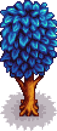

Mystic Tree
This page or section contains unmarked spoilers from update 1.6 of Stardew Valley. Players may want to avoid or be cautious toward reading this article/section. |
| Mystic Tree | |
 | |
| Information | |
| Seed | |
| Tapper Product | |
| Growth Time | Variable |
A Mystic Tree is a tree that grows from a Mystic Tree Seed. The crafting recipe for the seed becomes available after Foraging Mastery is claimed. Unlike other trees, Mystic Trees do not spread seeds on their own. They also do not drop any seeds when shaken or chopped.
By default, Mystic Trees have a 15% chance to grow to the next stage each night during Spring, Summer, or Fall. With Tree Fertilizer, Mystic Trees have a 30% chance to grow to the next stage each night, including during Winter.[1]
The tree yields Mystic Syrup every 7 days when tapped (3 days with a Heavy Tapper). It can be chopped down with an axe, producing 7-11 Hardwood, plus 1 Hardwood from the stump.
Stages of Growth
| Stage 1 | Stage 2 | Stage 3 | Stage 4 | Stage 5 | Stump |
|---|---|---|---|---|---|
References
- ↑ See Content\Data\WildTrees.xnb in the game code.
History
- 1.6: Introduced.
| Trees | |
|---|---|
| Trees | Green Rain Trees • Mahogany Tree • Maple Tree • Mushroom Tree • Mystic Tree • Oak Tree • Palm Tree • Pine Tree |
| Fruit Trees | Apple Tree • Apricot Tree • Banana Tree • Cherry Tree • Mango Tree • Orange Tree • Peach Tree • Pomegranate Tree |
| Seeds | Acorn • Mahogany Seed • Maple Seed • Mossy Seed • Mushroom Tree Seed • Pine Cone • Mystic Tree Seed |
| Fruit | Apple • Apricot • Banana • Cherry • Mango • Orange • Peach • Pomegranate |
| Misc | Large Log • Large Stump • Tea Bush |